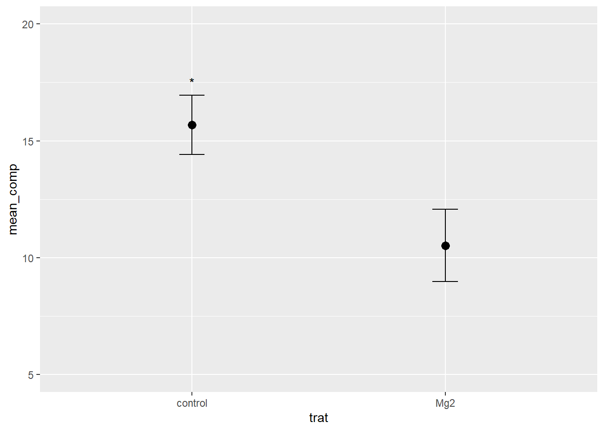

#install.packages("datapasta")
#install.packages("pak")Aula 4
Pacotes
#Usando o pak para instalar pacotes de outros repositórios
#library(pak)
#pak::pkg_install("Icens")
#pak::pkg_install("emdelponte/r4pde")
#library(remotes)
#remotes::install_github("emdelponte/r4pde") #prof ignorou isso e seguiu em frenteImportar dados
comp <- c( "9", "12.5", "10", "8", "13.2", "11", "10.8", "9.5", "10.8", "10.4", "13.72", "15.91", "15.7", "14.2", "15.9", "16.54", "18", "14.4", "16.41", "16")
dat <- data.frame(
stringsAsFactors = FALSE,
trat = c("Mg2","Mg2","Mg2","Mg2",
"Mg2","Mg2","Mg2","Mg2","Mg2","Mg2","control",
"control","control","control","control","control","control",
"control","control","control"),
rep = c(1L,2L,3L,4L,5L,6L,7L,8L,
9L,10L,1L,2L,3L,4L,5L,6L,7L,8L,9L,10L),
comp = c(9,12.5,10,8,13.2,11,10.8,
9.5,10.8,10.4,13.72,15.91,15.7,14.2,15.9,16.54,
18,14.4,16.41,16)
)
dat trat rep comp
1 Mg2 1 9.00
2 Mg2 2 12.50
3 Mg2 3 10.00
4 Mg2 4 8.00
5 Mg2 5 13.20
6 Mg2 6 11.00
7 Mg2 7 10.80
8 Mg2 8 9.50
9 Mg2 9 10.80
10 Mg2 10 10.40
11 control 1 13.72
12 control 2 15.91
13 control 3 15.70
14 control 4 14.20
15 control 5 15.90
16 control 6 16.54
17 control 7 18.00
18 control 8 14.40
19 control 9 16.41
20 control 10 16.00dat2 <- tibble::tribble(
~trat, ~rep, ~comp,
"Mg2", 1L, 9,
"Mg2", 2L, 12.5,
"Mg2", 3L, 10,
"Mg2", 4L, 8,
"Mg2", 5L, 13.2,
"Mg2", 6L, 11,
"Mg2", 7L, 10.8,
"Mg2", 8L, 9.5,
"Mg2", 9L, 10.8,
"Mg2", 10L, 10.4,
"control", 1L, 13.72,
"control", 2L, 15.91,
"control", 3L, 15.7,
"control", 4L, 14.2,
"control", 5L, 15.9,
"control", 6L, 16.54,
"control", 7L, 18,
"control", 8L, 14.4,
"control", 9L, 16.41,
"control", 10L, 16
)
dat2# A tibble: 20 × 3
trat rep comp
<chr> <int> <dbl>
1 Mg2 1 9
2 Mg2 2 12.5
3 Mg2 3 10
4 Mg2 4 8
5 Mg2 5 13.2
6 Mg2 6 11
7 Mg2 7 10.8
8 Mg2 8 9.5
9 Mg2 9 10.8
10 Mg2 10 10.4
11 control 1 13.7
12 control 2 15.9
13 control 3 15.7
14 control 4 14.2
15 control 5 15.9
16 control 6 16.5
17 control 7 18
18 control 8 14.4
19 control 9 16.4
20 control 10 16 # 'dat' e 'dat2' são iguais, o que muda é a forma de vizualização dos dados no chunk.visitas <- tibble::tribble(
~`codigo`, ~país, ~`n2`,
1L, "Brazil", 4303L,
2L, "Mozambique", 43L,
3L, "Portugal", 33L,
4L, "United States", 23L,
5L, "Angola", 19L,
6L, "Spain", 16L,
7L, "(not set)", 12L,
8L, "Colombia", 8L,
9L, "Germany", 5L,
10L, "Hungary", 5L,
11L, "United Kingdom", 5L,
12L, "Netherlands", 4L,
13L, "Ecuador", 3L,
14L, "France", 3L,
15L, "Chile", 2L,
16L, "Paraguay", 2L,
17L, "Peru", 2L,
18L, "Argentina", 1L,
19L, "Austria", 1L,
20L, "Bolivia", 1L,
21L, "Cape Verde", 1L,
22L, "China", 1L,
23L, "Egypt", 1L,
24L, "Finland", 1L,
25L, "India", 1L,
26L, "Italy", 1L,
27L, "Malaysia", 1L,
28L, "Pakistan", 1L,
29L, "Poland", 1L,
30L, "Singapore", 1L,
31L, "Timor-Leste", 1L,
32L, "Uruguay", 1L
)
visitas# A tibble: 32 × 3
codigo país n2
<int> <chr> <int>
1 1 Brazil 4303
2 2 Mozambique 43
3 3 Portugal 33
4 4 United States 23
5 5 Angola 19
6 6 Spain 16
7 7 (not set) 12
8 8 Colombia 8
9 9 Germany 5
10 10 Hungary 5
# ℹ 22 more rowsartilharia_cp24 <- tibble::tribble(
~POS, ~NOME, ~TIME, ~P, ~G,
1L, "José López", "Palmeiras", 12L, 10L,
2L, "Dellatorre", "Mirassol", 11L, 7L,
3L, "Raphael Veiga", "Palmeiras", 9L, 6L,
4L, "Yuri Alberto", "Corinthians", 11L, 5L
)#Importando dados do R4PDE
library(tidyverse)── Attaching core tidyverse packages ──────────────────────── tidyverse 2.0.0 ──
✔ dplyr 1.1.4 ✔ readr 2.1.5
✔ forcats 1.0.0 ✔ stringr 1.5.1
✔ ggplot2 3.5.0 ✔ tibble 3.2.1
✔ lubridate 1.9.3 ✔ tidyr 1.3.1
✔ purrr 1.0.2
── Conflicts ────────────────────────────────────────── tidyverse_conflicts() ──
✖ dplyr::filter() masks stats::filter()
✖ dplyr::lag() masks stats::lag()
ℹ Use the conflicted package (<http://conflicted.r-lib.org/>) to force all conflicts to become errorspepper <-
tribble(
~t, ~`1`, ~`2`, ~`3`,
0, 0.08, 0.001, 0.001,
7, 0.13, 0.01, 0.001,
14, 0.78, 0.09, 0.01,
21, 0.92, 0.25, 0.05,
28, 0.99, 0.8, 0.18,
35, 0.995, 0.98, 0.34,
42, 0.999, 0.99, 0.48,
49, 0.999, 0.999, 0.74
) pepper |>
pivot_longer(2:4,
names_to = "epidemic",
values_to = "inc") |>
ggplot(aes(t, inc, color = epidemic))+
geom_point()+
geom_line()+
annotate(geom = "text",
x = 12,
y = 0.79,
label = "1")+
annotate(geom = "text",
x = 26,
y = 0.80,
label = "2")+
annotate(geom = "text",
x = 47,
y = 0.76,
label = "3")+
theme(legend.position = "none")
Tabela de Contigência
library(tidyverse)
library(ggthemes)
cr <- read_csv("https://raw.githubusercontent.com/emdelponte/paper-coffee-rust-Ethiopia/master/data/survey_clean.csv")Rows: 405 Columns: 13
── Column specification ────────────────────────────────────────────────────────
Delimiter: ","
chr (7): region, zone, district, cultivar, shade, cropping_system, farm_mana...
dbl (6): farm, lon, lat, altitude, inc, sev2
ℹ Use `spec()` to retrieve the full column specification for this data.
ℹ Specify the column types or set `show_col_types = FALSE` to quiet this message.#install.packages("janitor")
library(janitor)
Attaching package: 'janitor'
The following objects are masked from 'package:stats':
chisq.test, fisher.testcr |>
tabyl(cultivar, farm_management) cultivar Intensive Minimal Moderate Unmanaged
Improved 83 0 0 0
Local 0 10 4 102
Mixture 82 59 65 0cr |>
count(farm_management, cultivar) |>
ggplot(aes(cultivar, n, fill = farm_management,
label = n))+
geom_col(position = "dodge2")+
scale_fill_canva()+
theme_bw()+
theme(strip.text.x = element_blank(),
legend.position = "top")+
geom_text(position = position_dodge(width = 0.9))+
facet_wrap(~cultivar, scales = "free_x")
#geom_bar
library(gsheet)
mg <- gsheet2tbl("https://docs.google.com/spreadsheets/d/1bq2N19DcZdtax2fQW9OHSGMR0X2__Z9T/edit#gid=983033137")
mg |>
group_by(trat) |>
summarise(mean_comp = mean(comp), sd_comp = sd(comp))|>
ggplot(aes(trat, mean_comp))+
geom_point(size = 3)+
ylim(5,20)+
#geom_col(fill = "steelblue", width = 0.5)+
geom_errorbar(aes(ymin = mean_comp - sd_comp,
ymax = mean_comp + sd_comp), width = 0.1)+
annotate (geom = "text",
x = 1, y = 17.5,
label = '*')mg |>
ggplot(aes(trat, comp))+
geom_jitter(width = 0.1)